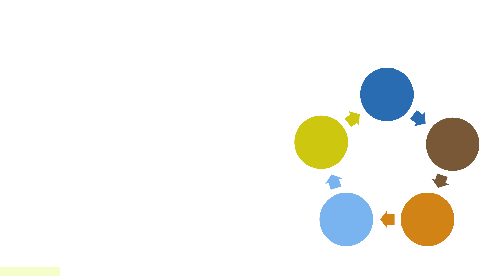
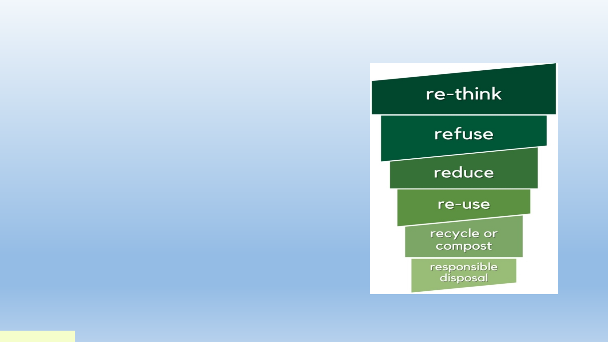
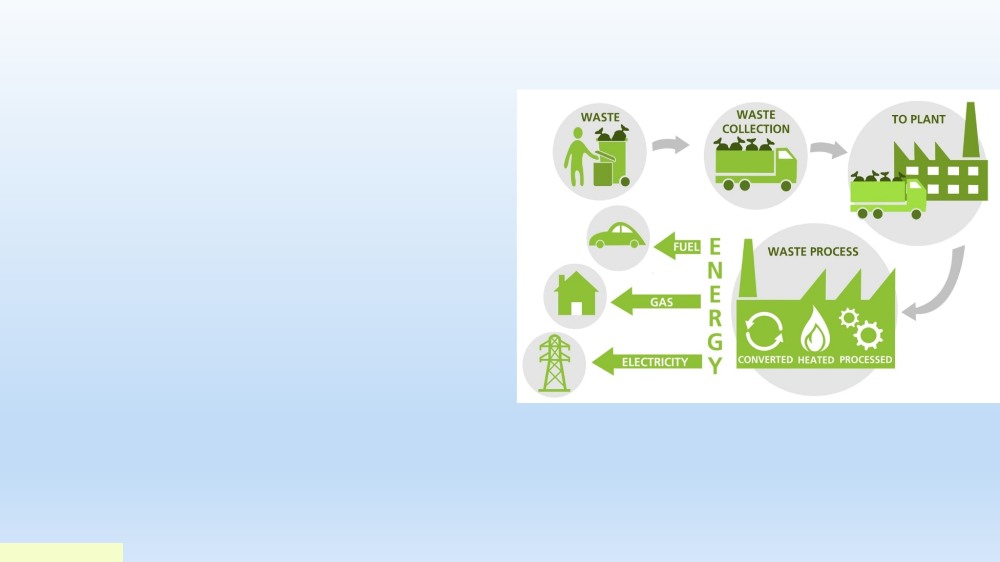

Sustainable
cities
and
howtopreserve
them
IntroducingateamofSirius
1\Sustainableurbanplanning
Citiesaroundtheworldfaceincreasingchallengesinurbandevelopment,includingenvironmental
pollution,greenhousegasemissions,naturalresourcedepletion,andpopulationgrowth.Toovercome
thesechallenges,sustainablecitiesandsustainableurbanplanningarevitalsolutions.
Sustainablecities
arethosethatstrivetoachieveabalancebetweenthecurrentneedsofthepopulationandthoseof
futuregenerations.Thisisdonethroughthedevelopmentofstrategiesandpoliciesaimedatpreserving
naturalresourcesandimprovingqualityoflife.
Sustainableurbanplanninginvolves
designinganddevelopingcitiesinawaythatpromotesenvironmental,economic,andsocial
sustainability.Thisincludestheuseofmoderntechnologyandinnovationsininfrastructuredesign,
promotingpublictransportationandcleanmobility,developinggreenspaces,andprovidingeasyaccess
tothem.
1.EnvironmentalProtection:Sustainableurbanplanningcontributesto
preservingthenaturalenvironment,reducingpollution,andpreventing
resourcedepletion.
2.EconomicGrowth:Sustainableurbanplanningpromotessustainable
economicgrowthandprovidesjobopportunities.
3.ImprovedQualityofLife:Sustainableurbanplanningaimstoprovidea
healthyandcomfortableurbanenvironmentforresidents,leadingtoan
improvementinqualityoflife.
Theimportanceofsustainablecitiesand
sustainableurbanplanning
Achievingsustainablecitiesandsustainableurban
planning:
1.Developingeffectivegovernmentpoliciesthat
promotesustainabilityinurbanplanningand
development.
2.Encouraginginnovationandinvestmentinsmart
andsustainableinfrastructure.
3.Promotingawarenessandeducationamongthe
populationabouttheimportanceofsustainable
practicesindailylife.
Resources Germany Singapore
Sustainabl
eenergy
Sept2010 Nov2018
Waste
disposal
Jan2016 Oct2020
New
technolog
y
Mar2022 May2023

2\Greenhydrogenisacleanandrenewablesourceofenergy,
makingitakayelementinachievingsustainabilityincities.
ProjectObjectives:
●Raisingawarenessoftheimportanceofgreenhydrogen:
○Clarifythebenefitsofusinggreenhydrogenincities.
○Highlightthecontributionofgreenhydrogentoachieving
sustainability.
●Providingrealisticsolutions
○Presentavailablegreenhydrogentechnologies.
○Offersuccessfulcasestudiesofgreenhydrogenapplicationsin
cities.
●Encouragingparticipation:
○Encourageindividualsandinstitutionstousegreenhydrogen.
○Supportpoliciesandlegislationthatpromotetheuseofgreen
hydrogen
Initiation
Planning
Implementation
Monitoring
Follow-up
.Content:
1. What is Green Hydrogen?
2. Benefits of Using Green Hydrogen in Cities:
● Reducing Carbon Emissions:
○ Reducing air pollution and improving public health.
○ Contributing to combating climate change.
● Reducing Reliance on Fossil Fuels:
○ Promoting energy security.
○ Reducing energy costs.
● Creating Job Opportunities:
○ Stimulating the growth of the green sector.
○ Supporting economic development.
3. Available Green Hydrogen Technologies:
● Photovoltaic Solar Energy Systems:
○ Converting sunlight into electricity.
○ Used to power homes, buildings, and businesses.
● Solar Thermal Energy Systems:
○ Converting sunlight into thermal energy.
○ Used to heat water and provide heating and cooling.
4. Successful Case Studies of Green Hydrogen Applications in Cities
: ● Copenhagen, Denmark: ○ Known as the "City of the Sun".
○ Meets 50% of its energy needs from solar energy.
● Masdar City, UAE:
○ A sustainable city that relies entirely on renewable energy.
○ A leading model for sustainable cities.
5.HowCanWePromotetheUseofGreenHydrogeninCities?
●SupportingPoliciesandLegislation:
○Enactingincentivelawsfortheuseofgreenhydrogen.
○Providingfinancialincentivesforinvestorsingreenhydrogenprojects.
●RaisingAwareness:
○Organizingawarenesscampaignsaboutthebenefitsofgreenhydrogen.
○Educatingthecommunityaboutavailablegreenhydrogentechnologies.
●InvestinginResearchandDevelopment:
○Supportingthedevelopmentofnewtechnologiesforgreenhydrogen.
○Reducingthecostofgreenhydrogensystems.
Conclusion:
Greenhydrogenisakeyelementinachievingsustainabilityincities

3\Wastemanagementinsustainablecities
Subtitle:Buildingagreenerfuture
Introduction:
ChallengesinWasteManagement
-Discussionofthechallengesfacedinwastemanagement,
includingincreasingurbanization,populationgrowth,and
resourcedepletion.
-Impactofimproperwastemanagementonpublichealth,
environment,andeconomy.
●PrinciplesofSustainableWasteManagement
-Introductiontotheprinciplesofsustainablewaste
management:
-Reduce
-Reuse
-Recycle
-Recover
-Dispose

●StrategiesforSustainableWasteManagement
-Overviewofstrategiesforsustainablewaste
management:
- Sourcereduction
-Wastesegregationandrecyclingprograms
-Composting
-Waste-to-energytechnologies
-ExtendedProducerResponsibility(EPR)
●CaseStudy:WasteManagementInitiativesin
[Sweden]
-Descriptionofsuccessfulwastemanagement
initiativesimplementedinaspecificcity.
-Highlightingkeystrategies,challengesfaced,and
outcomesachieved.
●BenefitsofSustainableWasteManagement
• -Discussionofthebenefitsofsustainablewastemanagement,including:
• -Reductionofgreenhousegasemissions
• -Conservationofnaturalresources
• -Creationofgreenjobs
• -Improvementofpublichealth
• -Enhancementofurbanaesthetics
●TechnologicalInnovationsinWasteManagement
• -Overviewoftechnologicalinnovationscontributingtosustainablewastemanagement:
• -Smartwastecollectionsystems
• -Wastesortingrobots
• -Sensor-basedmonitoringsystems
• -Waste-to-energytechnologies
●CommunityEngagementandEducation
• -Importanceofcommunityengagementandeducationinpromotingsustainablewastemanagementpractices.
• -Examplesofcommunity-basedinitiativesandeducationalprograms.

●PolicyandRegulation
-Discussionoftheroleofpoliciesandregulationsinpromotingsustainablewastemanagement.
-Examplesofeffectivewastemanagementpoliciesandregulationsatlocal,national,and
internationallevels.
Conclusion:
Byimplementingeffectivewastemanagementstrategies,citiescanmitigateenvironmental
pollution,conserveresources,promotepublichealth,andcreateeconomicopportunities.
4\Technologicalinnovation
1.Artificialintelligencetechnologyintraffic
management:Usingartificialintelligencesystemsto
improvetrafficflow,reducecongestion,andimprove
theefficiencyofroaduse.
2.InternetofThings(IoT)forenergymanagement:
IntegrationofsmartsensorsandIoTsystemsto
monitorandoptimizeenergyconsumptioninbuildings
andpublicfacilities.
3.Greeninfrastructuretechnology:Developing
infrastructuresystemsthatusesustainablematerials
andrelyongreenconstructiontechniquestoreduce
environmentalimpact.
4.Renewableenergytechnologiesinconstruction:
Integratingrenewableenergygenerationsystemssuch
assolarpanelsandwindenergyintothedesignof
buildingstoachievesustainabilityinenergysupply.
5.Improvingresourcerecyclingthroughtechnology:Usingadvancedtechnologiestoincrease
theeffectivenessofrecyclingprocessesandthecorrectdisposalofwaste.
6.Cloudcomputingtechnologytoimproveresourcemanagement:Usingcloudcomputingto
improvetheefficiencyofresourceuseandreduceenergyconsumptionindatacentersand
governmentsystems.
7.Smartphoneapplicationsforurbanlife:Developinteractivesmartphoneapplicationsto
improvecitizens’experienceinsustainablecities,suchassharinginformationaboutpublic
transportationandsolarparking.
8.Urbanefficiencymanagementsystems:Dataanalysistechnologytoimprovecityplanning
andbetteridentifyinfrastructureneedsbasedonpopulationbehaviorandurban
developments.
9.Robotictechnologyforurbanmaintenance:Usingrobotstocarryoutmaintenanceand
cleaningworkinstreetsandpublicareas,whichreducestheuseofhumanresourcesand
improvespublichygiene.
10.Environmentalmonitoringtechniques:Usingadvancedsystemstomonitorair,waterand
noisequalitytomaintainahealthyenvironmentincities.
Presentationteam
E-mailphone numberName
+201016701329T.L\MohamedAliKassab
modyomar576@gmail+201101552079M\MohamedOmarAhmed
me2750105@gmail.com+201273931469M\MaryamElsayedMohamed
+201064940778M\MaryamEhab